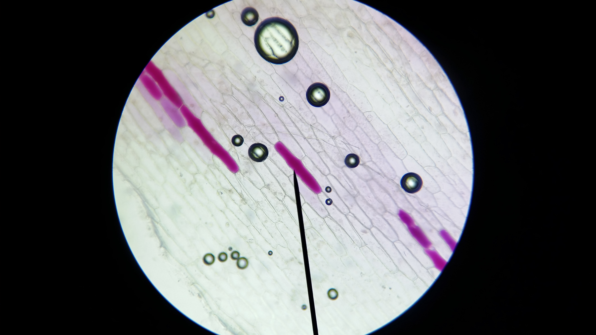

Onderzoeksvraag 1
Wat is de invloed van een zoutoplossing op rode uicellen, wanneer je met een filtreerpapiertje, de zoutoplossing onder het dekglaasje van rode uicellen preparaat zuigt?
Onderzoeksvraag 2
Zijn de uicellen weer in de oude toestand terug te brengen wanneer je een filtreerblaadje zuiver water onder het dekglaasje zuigt?
Hypothese bij vraag 1
Ik denk dat de invloed van een zoutoplossing op rode uicellen, wanneer je met een filtreerpapiertje, de zoutoplossing onder het dekglaasje van rode uicellen preparaat zuigt is dat het celmembraam van de celwand loslaat.
Hypothese bij vraag 2
Ik denk dat de uicellen weer in de oude toestand terug te brengen zijn wanneer je een filtreerblaadje zuiver water onder het dekglaasje zuigt.
Materialen lijst
Prepareer naald
Preparaat glas
Dekglaasje
Pincet
Uischil
Microscoop
Zoutoplossing
Gedestilleerd water
Maken preparaat
Eerst haal je met een pincet een dun laagje schil van de ui af en leg je op het preparaat glas met een druppel gedestilleerd water. Dek het af met een afdekglaasje.
Scherpstellen microscoop
Eerst met de grote schroef en daarna alleen nog maar met de kleine schroef.
Waarnemingen destileerd water
De kleurstof is versprijd over de hele cel
Waarnemingen zout water
De kleurstof is nu meer centraal en niet meer volledig versprijd over de cel

Bijzonderheden
Het practicum was niet volledig gelukt omdat het niet lukte om de cellen gelijdelijk in aanraking te komen met zout water